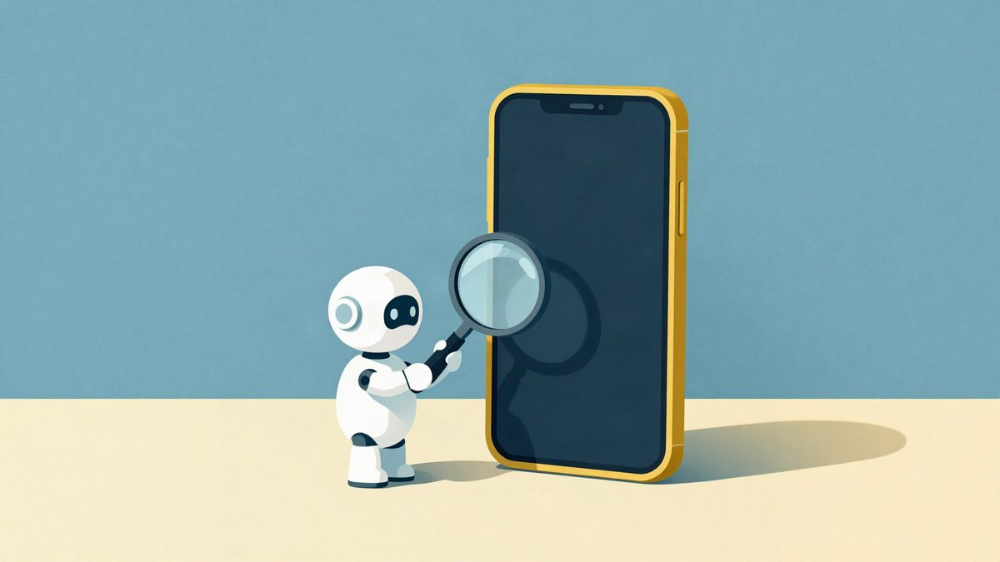

CATL je predstavio bateriju Chocolate Battery 30# od 100 kWh: zamjena za 99 sekundi i doživotno jamstvo

CATL je na zajedničkom događaju s Huaweiem predstavio izmjenjivu bateriju Chocolate Battery 30# kapaciteta 100 kWh. CATL tvrdi da nudi doseg veći od 700 km, zamjenu na stanici za 99 sekundi i doživotno jamstvo. Cijena i dostupnost izvan Kine nisu poznate.
CATL je na zajedničkom događaju s Huaweiem predstavio novu traction bateriju Chocolate Battery 30#. Kapacitet joj je 100 kWh, a CATL tvrdi da omogućuje doseg veći od 700 km. Baterija je predviđena za sustav zamjene na specijaliziranim stanicama, gdje cijeli postupak, tvrdi CATL, traje 99 sekundi.
Snaga i punjenje
Vršna snaga pražnjenja je 600 kW. CATL tvrdi da automobili s takvom baterijom mogu ubrzati do 100 km/h za 3 sekunde. To je podatak proizvođača, neovisnih testova za sada nema.
Kad se baterija ne mijenja nego puni, 10 minuta vrlo brzog punjenja, kažu u CATL-u, daje dodatnih 400 km dosega.
Trajnost i jamstvo
Mehanizam za pričvršćivanje baterije dimenzioniran je za 27 godina uporabe uz jednu zamjenu dnevno. Sama baterija ima doživotno jamstvo. CATL navodi da je sustav prošao ispitivanja otpornosti na vibracije prema zahtjevima koji su 1,5 puta stroži od nacionalnih standarda.
Huawei Qiankun i CATL ranije su najavili da će zajedno razviti novu generaciju inteligentnog ekosustava za zamjenu traction baterija. Chocolate Battery 30# predstavljena je u tom okviru.
Izvor: iXBT
Povezani članci

Sberbank je razvio AI koji za nekoliko sekundi pronalazi greške pristupačnosti u mobilnim aplikacijama27. studenoga 2026. Terra Drone je razvio vlastiti GCS za nadzor više presretačkih dronova i isporučio ga japanskoj agenciji za obrambenu opremu26. studenoga 2026.
Terra Drone je razvio vlastiti GCS za nadzor više presretačkih dronova i isporučio ga japanskoj agenciji za obrambenu opremu26. studenoga 2026. Photon Matrix: kineski laser navodno uništava do 30 komaraca u sekundi22. studenoga 2026.
Photon Matrix: kineski laser navodno uništava do 30 komaraca u sekundi22. studenoga 2026.